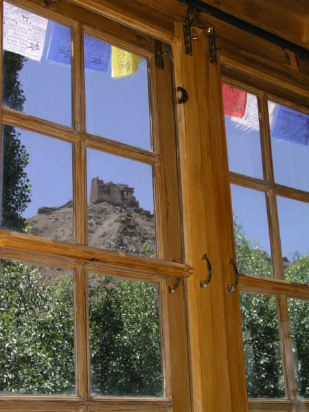
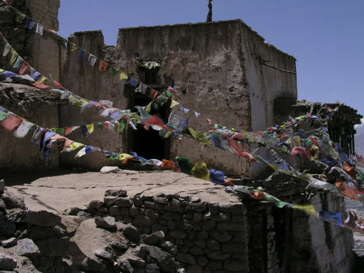
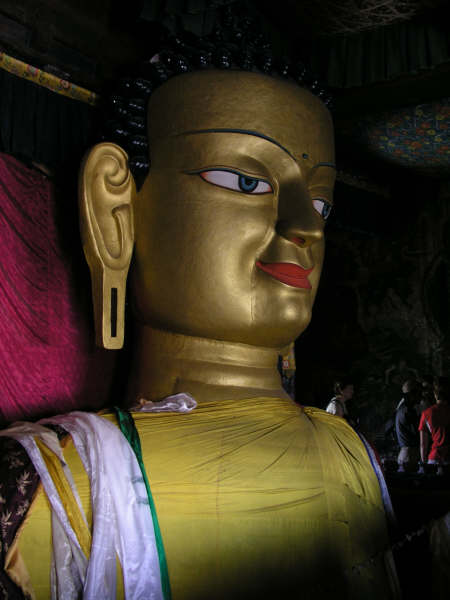
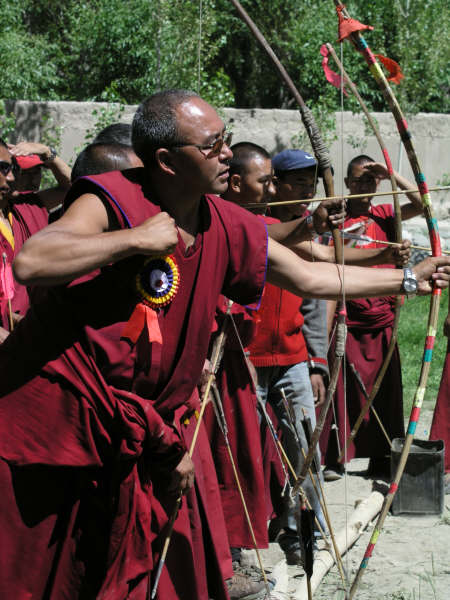

High altitude days
Leh, Ladakh, India
So, after months of training we said goodbye to Sydney and the very special friends we have made there amd headed off to the high Himalayas in Northern India enroute to the UK. It seems bets are on to how long we will end up back in England but, at the moment, 6 months is the odds-on favourite!!
After a seven hour stopover in Hong Kong, where we watched news of the blasts in Bombay, we landed in Delhi at two in the morning. It's monsoon time in northern India at the moment which made Delhi particularly unpleasant - dirty puddles everywhere and, where there weren't puddles there were muddy sludgy piles of stuff for you to sink your toes into (urrghh!) But, we didn't have too much time to enjoy the Delhi sludge as, at 4am the next morning, Namgial arrived to take us to the airport.
As some of you may already know, Sue has booked most of our trip through an agency in Leh that she found on the internet called Yama Adventures. We were both a little nervous about this, but Namgial (the owner of Yama Adventures) seemed like a very efficient and polite guy via emails so we went for it. Needless to say, as the time came closer for the flight up to Leh we both became a lot more nervous - perhaps this Namgial fella wouldn't even turn up and we would be left in Delhi without any tickets to Leh, lots of cold weather trekking equipment and six months of training gone to waste. But - all was well - he turned up, he had our tickets AND he was a nice bloke.
Leh is at 3500m - so 3.5km in the air! This meant that our first few days were spent acclimatising. Even the few steps up to our beautiful room at the Milarepa Guesthouse has us gasping for air. The view from our room is wondrous - we have a perfect unspoilt view of Stok Kangri - one of the highest mountains in this region. It is still snow-covered although days in Leh are getting as high as 37 degrees at the moment which is quite a surprise as we came here expecting it to be pretty chilly.
Last night was pretty funny as we were invited by a friend of Namgial's to a Tibetan cultural performance in an area called Choglomsar. When we got there we were handed a leaflet about the troupe who were performing. Sue chuckled because the the name was the same as a friend of her's from London (but then, lots of Tibetan names are the same!) She read on and it said the guy had lived in London for a few years and it turned out it was indeed the Phuntsok Tsering she had known in London (some of you may even remember him - although possibly you'll recall him being called 'Plimsole') Strange what a small world it can be!
We set off for our first trek in a region called Sham in the next couple of days. They call it a baby trek as it is good for acclimatising and supposedly not too difficult.... but we'll see....
After a seven hour stopover in Hong Kong, where we watched news of the blasts in Bombay, we landed in Delhi at two in the morning. It's monsoon time in northern India at the moment which made Delhi particularly unpleasant - dirty puddles everywhere and, where there weren't puddles there were muddy sludgy piles of stuff for you to sink your toes into (urrghh!) But, we didn't have too much time to enjoy the Delhi sludge as, at 4am the next morning, Namgial arrived to take us to the airport.
As some of you may already know, Sue has booked most of our trip through an agency in Leh that she found on the internet called Yama Adventures. We were both a little nervous about this, but Namgial (the owner of Yama Adventures) seemed like a very efficient and polite guy via emails so we went for it. Needless to say, as the time came closer for the flight up to Leh we both became a lot more nervous - perhaps this Namgial fella wouldn't even turn up and we would be left in Delhi without any tickets to Leh, lots of cold weather trekking equipment and six months of training gone to waste. But - all was well - he turned up, he had our tickets AND he was a nice bloke.
Leh is at 3500m - so 3.5km in the air! This meant that our first few days were spent acclimatising. Even the few steps up to our beautiful room at the Milarepa Guesthouse has us gasping for air. The view from our room is wondrous - we have a perfect unspoilt view of Stok Kangri - one of the highest mountains in this region. It is still snow-covered although days in Leh are getting as high as 37 degrees at the moment which is quite a surprise as we came here expecting it to be pretty chilly.
Last night was pretty funny as we were invited by a friend of Namgial's to a Tibetan cultural performance in an area called Choglomsar. When we got there we were handed a leaflet about the troupe who were performing. Sue chuckled because the the name was the same as a friend of her's from London (but then, lots of Tibetan names are the same!) She read on and it said the guy had lived in London for a few years and it turned out it was indeed the Phuntsok Tsering she had known in London (some of you may even remember him - although possibly you'll recall him being called 'Plimsole') Strange what a small world it can be!
We set off for our first trek in a region called Sham in the next couple of days. They call it a baby trek as it is good for acclimatising and supposedly not too difficult.... but we'll see....

View from our bedroom at the Milarepa Guesthouse, Leh

Butter Lamps at Hemis Gompa

Old Town, Leh

Maitreya Buddha

Archery playing monks at Thiksey Gompa

More archery monks